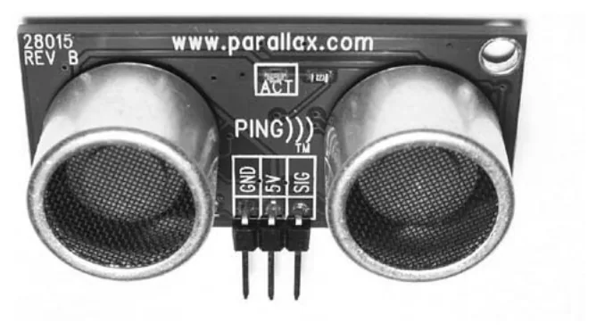
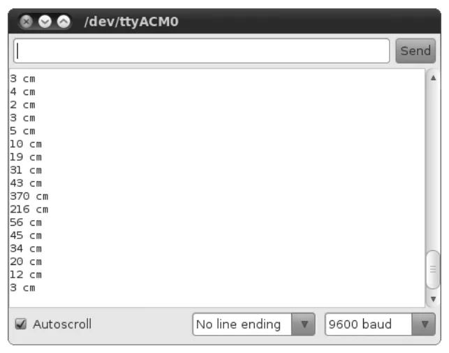

Our final method of collision avoidance is an ultrasonic distance sensor. This sensor bounces a sound wave of a frequency (that cannot be heard by the human ear) off a surface and measures the amount of time it takes for the sound to return to the sensor. We’ll use the Parallax Ping))) ultrasonic distance sensor, shown in Figure 12-26, for this project, because it’s inexpensive and accurate down to 1 cm.

An ultrasonic sensor’s accuracy and range mean it can measure distances between 2 and 300 cm. However, because the sound wave needs to be reflected back to the sensor, the sensor must be angled less than 45 degrees away from the direction of travel.
Connecting the Ultrasonic Sensor
To connect the sensor, attach the 5 V and GND leads to their respective pins, and attach the SIG (short for signal) pin to any Arduino digital pin.
Using the Ultrasonic Sensor
The ultrasonic sensor takes measurements only when requested to do so. To take a measurement, we send a very short HIGH signal of 5 microseconds (mS) to the SIG pin. After a moment, the sensor should return a HIGH signal whose length is the period of time the ultrasonic sound takes to travel from and to the sensor; this value should be halved to determine the actual distance between the sensor and the object.
We need to use the same digital pin for output and input, and two new functions:
delayMicroseconds(mS)Pauses the Arduino sketch in microseconds (mS)pulseDuration(pin, HIGH)Measures the length of aHIGHpulse on digital pinpinand returns the time in microseconds
After we have the duration of the incoming pulse, we convert it to centi meters by dividing it by 29.412 (because the speed of sound is 340 meters per second, or 34 cm per millisecond).
Testing the Ultrasonic Distance Sensor
To simplify using the sensor, we use the function getDistance() in Listing 12-3. Connect your ultrasonic sensor with the SIG pin to digital pin 3, and then enter and upload the following.
// Listing 12-3
int signal=3;
void setup()
{
pinMode(signal, OUTPUT);
Serial.begin(9600);
}
int getDistance()
// returns distance from Ping))) sensor in cm
{
int distance;
unsigned long pulseduration=0;
// get the raw measurement data from Ping)))
// set pin as output so we can send a pulse
❶ pinMode(signal, OUTPUT);
// set output to LOW
digitalWrite(signal, LOW);
delayMicroseconds(5);
❷ // send the 5uS pulse out to activate Ping)))
digitalWrite(signal, HIGH);
delayMicroseconds(5);
digitalWrite(signal, LOW);
❸ // change the digital pin to input to read the incoming pulse
pinMode(signal, INPUT);
// measure the length of the incoming pulse
pulseduration=pulseIn(signal, HIGH);
❹ // divide the pulse length in half
pulseduration=pulseduration/2;
❺ // convert to centimeters
distance = int(pulseduration/29);
return distance;
}
void loop()
{
Serial.print(getDistance());
Serial.println(" cm ");
delay(500);
}The distance is returned by the function int getDistance(). By following ❶ through ❺, you can see how the pulse is sent to the sensor and then how the time of return is measured, which is used to calculate the distance.
After uploading the sketch, open the Serial Monitor and move an object toward and away from the sensor. The distance to the object should be returned in centimeters, as shown in Figure 12-27.
